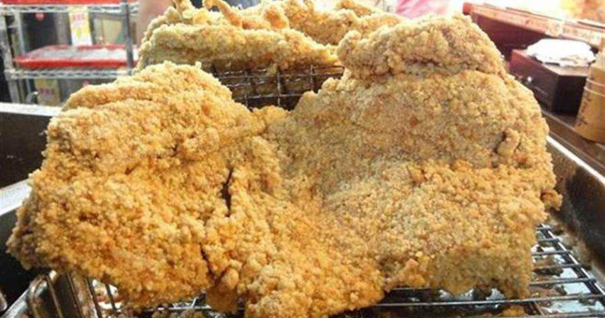
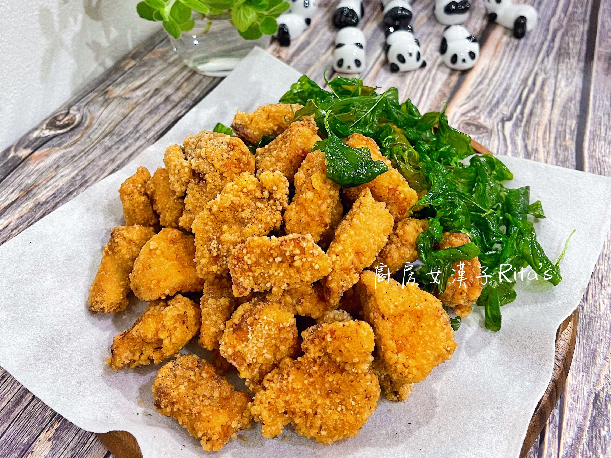

世界各国の様々なフライドチキン
台湾
ジーパイ(雞排)
台湾では、巨大で平たい鶏肉を使った独自のフライドチキンが誕生しました。屋台で12インチ近い幅の鶏肉が売られている。作り方は、鶏の胸肉をステーキの大きさになるまで叩きます。その後、小麦粉、卵、サツマイモの粉をまぶして、カラッと揚げる。5種類のスパイス（シナモン、四川山椒、フェンネルシード、スターアニス、マンダリンオレンジピール）を使っているので、このパン粉が特別な味を実現する鍵なのだ。

シェンスージー(鹽酥雞)
シェンスージーは台湾の代表的なおやつである。多くの屋台では、揚げる前に九重塔を鍋に入れる。 また、揚げた具材にソースを塗って、しっとりとした味わいに仕上げるお店もある。 塩鶏の豊かな風味とパリッとした食感は、多くの美食家たちに愛されている。